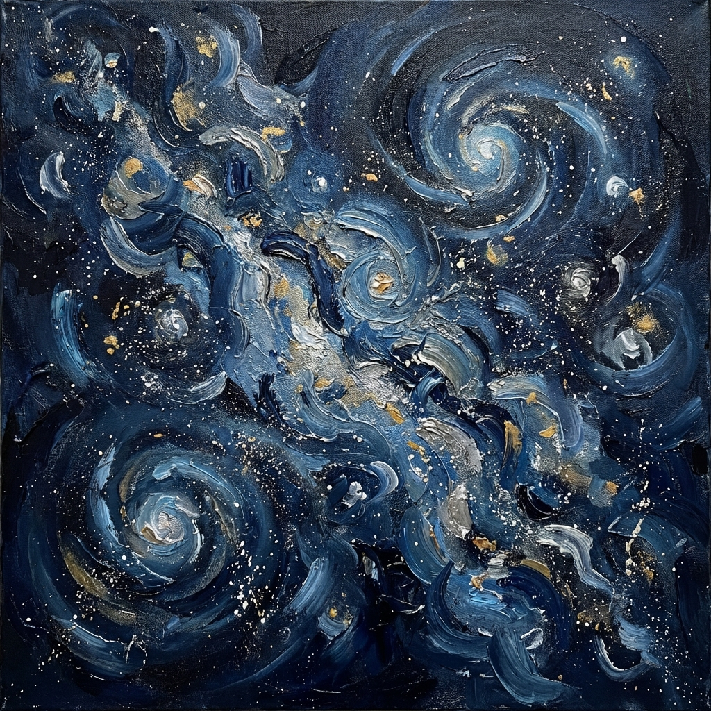

La Via delle Stelle

Premio PERSEO 2023 - Encomio galattico poesia
Maestosa, mutevole vetrina dei nostri cieli
una tra miliardi di galassie
unica per noi
a tua volta piccola
nella sconfinata immensità dell'universo.
una tra miliardi di galassie
unica per noi
a tua volta piccola
nella sconfinata immensità dell'universo.
Dal nostro Pianeta
sospeso nel vuoto dello spazio che ti appartiene
dolcemente sorvegliati dal tuo protettivo abbraccio
mentre sorgi e tramonti intorno a noi
senza parole, emozionati
guardiamo la nostra Città fatta di Stelle.
sospeso nel vuoto dello spazio che ti appartiene
dolcemente sorvegliati dal tuo protettivo abbraccio
mentre sorgi e tramonti intorno a noi
senza parole, emozionati
guardiamo la nostra Città fatta di Stelle.
Così lontana
come un orologio antico tempestato di diamanti
rallenti il tempo quasi a fermarlo
per mostrarci com'eravamo
prima ancora di esistere.
come un orologio antico tempestato di diamanti
rallenti il tempo quasi a fermarlo
per mostrarci com'eravamo
prima ancora di esistere.
Così vicina
da non avere bisogno di raggiungerti
perché tu per prima hai raggiunto noi
che siamo fatti di te.
da non avere bisogno di raggiungerti
perché tu per prima hai raggiunto noi
che siamo fatti di te.
Attratti dalla tua magnetica forza
docilmente ti seguiamo
nella folle corsa verso l'ignoto
in un viaggio che non finirà mai.
docilmente ti seguiamo
nella folle corsa verso l'ignoto
in un viaggio che non finirà mai.
Paola Spremulli